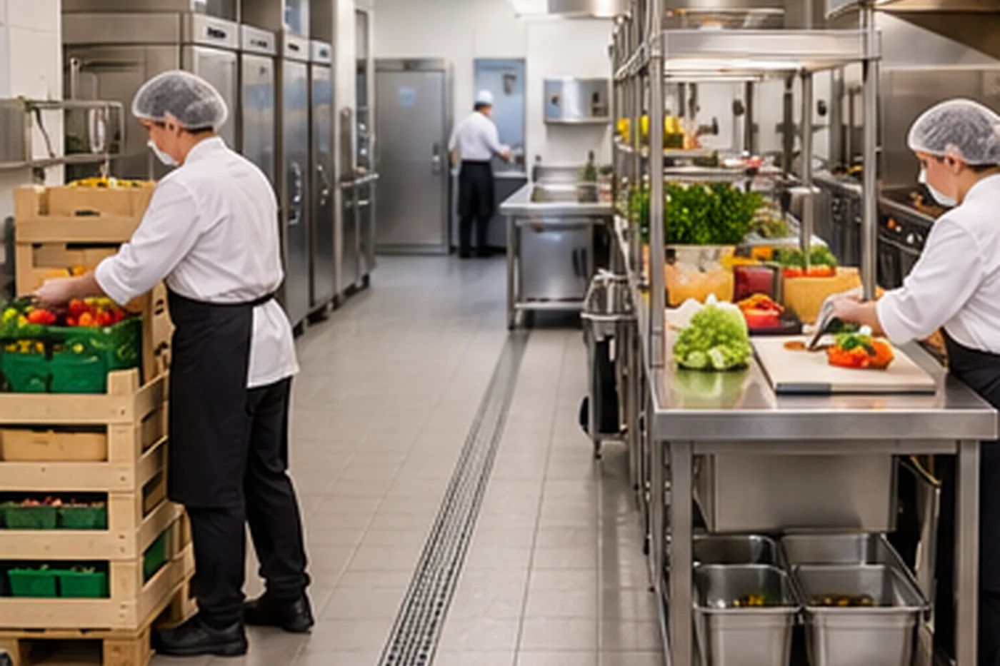
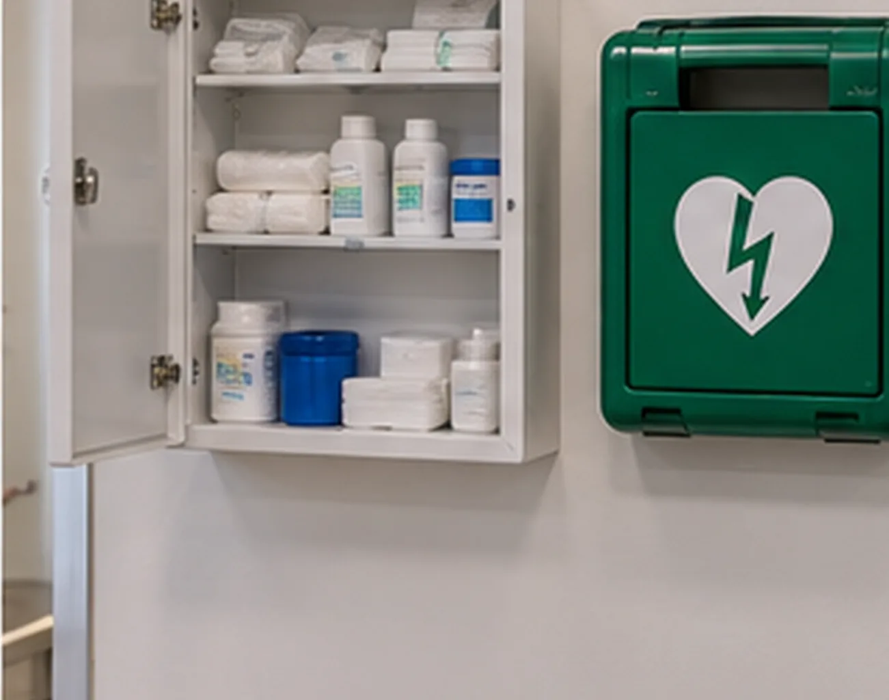
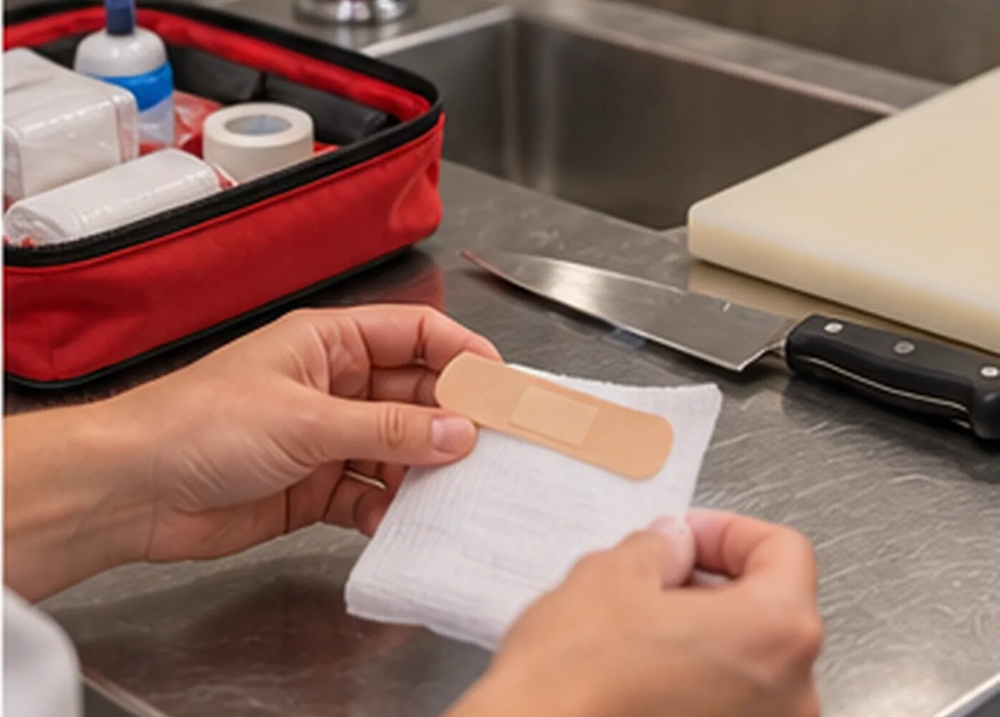
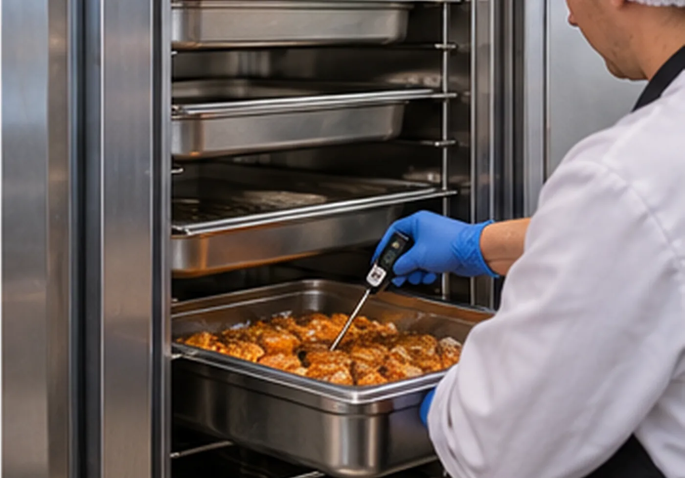
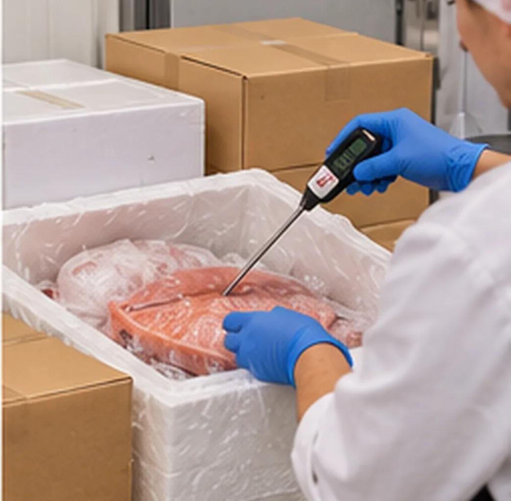
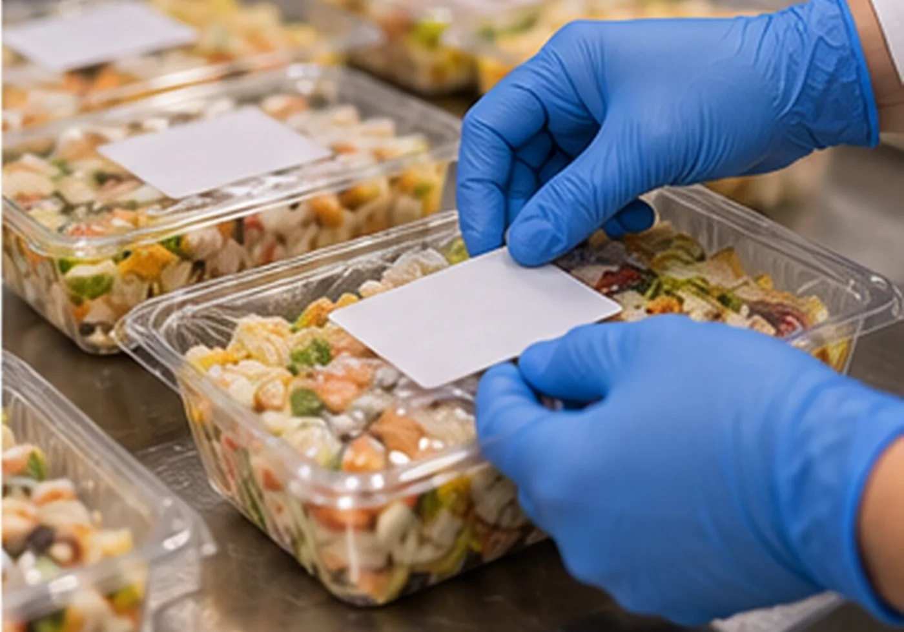
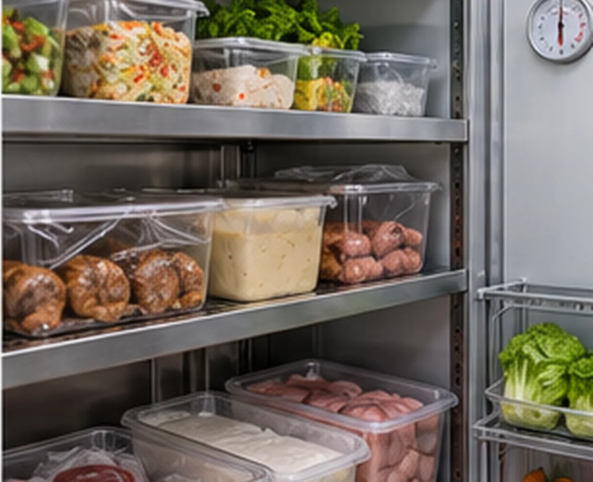

Parcours de formation
Sept séances sur cinq demi-journées de 2 heures, en présentiel. Les activités s’adaptent au groupe et à l’établissement.
HACCP (1) : dangers, températures, bonnes pratiques
Objectifs
- Distinguer danger, risque et mesure de maîtrise.
- Citer les températures de référence (chaud, froid, congélation, refroidissement).
- Identifier les cinq familles de bonnes pratiques d’hygiène.
Activités
- Tour de table : une situation vécue en cuisine ou en salle.
- Exposé animé : zone de danger, contamination croisée, marche en avant.
- Atelier sur plan : repérer les croisements de flux dans votre établissement.
Schémas utiles : S02 · Températures à connaître S05 · Contamination croisée S01 · Marche en avant en cuisine S08 · Cinq familles de BPH S14 · Lavage des mains
Scènes à analyser : 
Gestes de premiers secours (1)
Objectifs
- Appliquer la démarche : protéger, examiner, alerter, secourir.
- Rédiger un message d’alerte complet.
Activités
- Mise en pratique animée par le formateur : saignement, inconscience, étouffement.
- Scénarios en cuisine : brûlure, coupure, malaise.
Schémas utiles : S13 · Sauveteur secouriste : quatre temps S16 · Message d’alerte
Scènes à analyser :  
HACCP (2) : les 7 principes appliqués
Objectifs
- Construire un arbre de décision simple pour un plat.
- Choisir des limites critiques et des actions correctives réalistes.
- Utiliser les 5M pour chercher une cause.
Activités
- Étude de cas : un plat cuit à l’avance, de la réception au service.
- Atelier : tableau d’analyse des dangers sur la plateforme PMS.
- Nettoyage-désinfection : six temps.
Schémas utiles : S03 · Les 7 principes HACCP S06 · Parcours d’un produit S04 · Les 5M S09 · Nettoyage et désinfection
Scènes à analyser :  
Gestes de premiers secours (2)
Objectifs
- Réagir à un feu de friteuse et à une brûlure.
- Réagir à un arrêt cardiaque : compressions et défibrillateur.
Activités
- Cas pratiques en binômes, débriefing collectif.
- Visite de la trousse et du défibrillateur, s’il y en a un.
Schémas utiles : S13 · Sauveteur secouriste : quatre temps S12 · Hiérarchie de prévention
Scènes à analyser : 

Plan de maîtrise sanitaire (1) : composition et traçabilité
Objectifs
- Nommer les trois volets du PMS.
- Mettre en place la traçabilité amont et aval.
Activités
- Parcours dans la plateforme PMS : cours, outils, travaux dirigés.
- Atelier : trame de relevé de températures et de plan de nettoyage.
Schémas utiles : S15 · Traçabilité S07 · Cycle PDCA
Scènes à analyser :  
Plan de maîtrise sanitaire (2) : vérification et inspection
Objectifs
- Mener un audit interne simple.
- Enregistrer et traiter une non-conformité.
- Se préparer à un contrôle officiel.
Activités
- Audit interne sur la plateforme, registre des non-conformités.
- Simulateur d’inspection : jeu de rôle avec un inspecteur.
Schémas utiles : S07 · Cycle PDCA S04 · Les 5M
Document unique : évaluer les risques professionnels
Objectifs
- Découper l’établissement en unités de travail.
- Coter les risques et hiérarchiser les actions.
- Construire un plan d’action.
Activités
- Exercice sur votre établissement : tableau gravité × probabilité (page Document unique).
- Hiérarchie de prévention : de la suppression du danger à l’EPI.
- Bilan de la session et évaluations.
Schémas utiles : S11 · Document unique en six étapes S10 · Cotation gravité × probabilité S12 · Hiérarchie de prévention